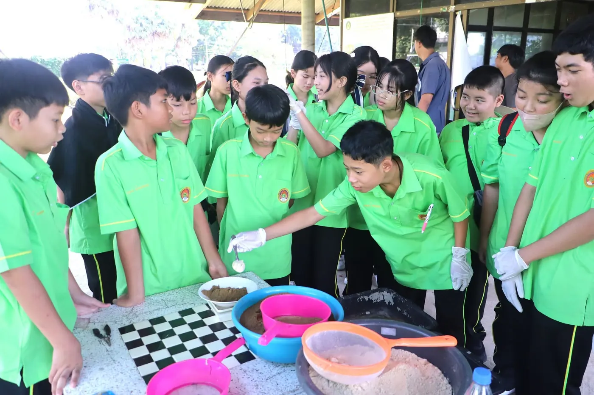

เรียนแบบนักวิทยาศาสตร์Learning like scientists
โรงเรียนสาธิต มหาวิทยาลัยราชภัฏเพชรบุรี เป็นโรงเรียนต้นแบบในการจัดการศึกษาระดับมัธยมศึกษาตอนต้นและตอนปลาย ที่มุ่งเน้นความเป็นเลิศด้านวิทยาศาสตร์และคณิตศาสตร์The school is a model for lower and upper secondary education, aiming for excellence in science and mathematics.
นักเรียนได้ฝึกทำโครงงาน เช่น การประกวดโครงงานสิ่งประดิษฐ์และนวัตกรรมPupils take on projects such as the invention and innovation contest.
ดูผลงานนักเรียนSee student work